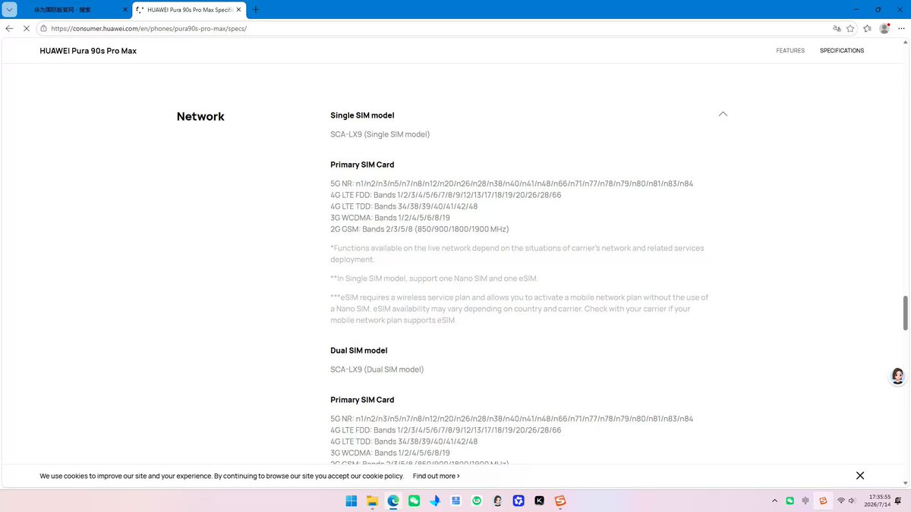
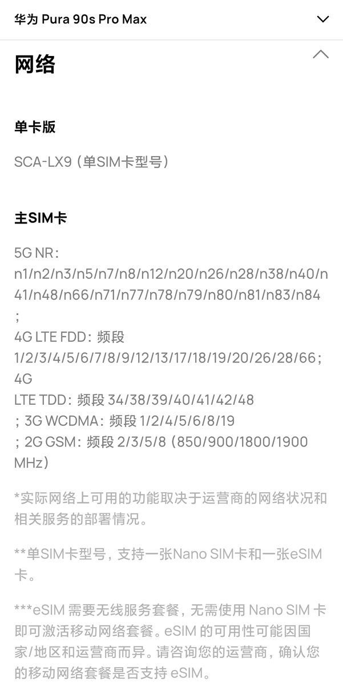
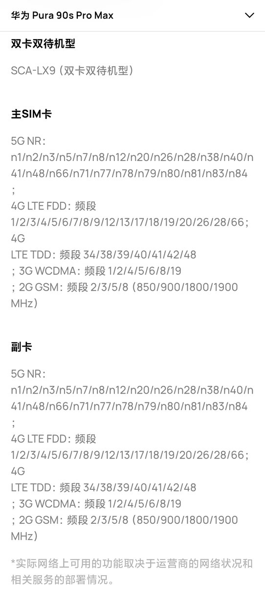

发布页面：
https://t.co/lKmxzPgBMU




华为5G解禁啦？国际版官网泄露HUAWEI Pura90s Pro Max网络参数信息
5G NR：n1/n2/n3/n5/n7/n8/n12/n20/n26/n28/n38/n40/n41/n48/n66/n71/n77/n78/n79/n80/n81/n83/n84；
4G LTE FDD：频段1/2/3/4/5/6/7/8/9/12/13/17/18/19/20/26/28/66；
4G LTE TDD：频段 34/38/39/40/41/42/48；
3G WCDMA：频段 https://t.co/hwCD38pyrZ
5G NR：n1/n2/n3/n5/n7/n8/n12/n20/n26/n28/n38/n40/n41/n48/n66/n71/n77/n78/n79/n80/n81/n83/n84；
4G LTE FDD：频段1/2/3/4/5/6/7/8/9/12/13/17/18/19/20/26/28/66；
4G LTE TDD：频段 34/38/39/40/41/42/48；
3G WCDMA：频段 https://t.co/hwCD38pyrZ